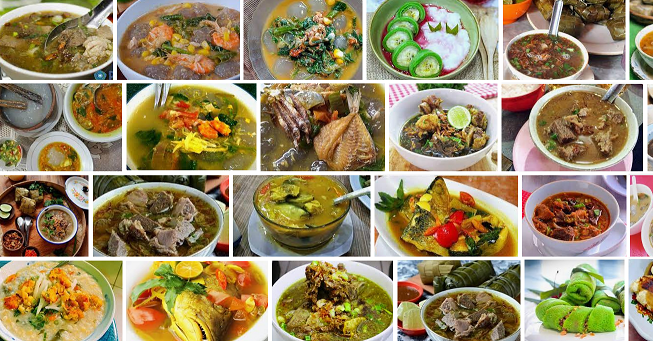

RUMAH MAKAN "KHAS SULAWESI SELATAN" Setiap daerah di Indonesia punya kuliner khasnya masing-masing yang autentik dan unik. Tak sebatas makanan atau jajanan, kuliner juga bisa menjadi jembatan buat pemajuan wisata serta seni budaya. Apalagi, ada berbagai cerita unik dan filosofi di balik makanan-makanan tradisional. Karenanya, mencicipi makanan tradisional adalah sebuah keharusan, ketika Anda sedang berkunjung ke daerah. Semisal, ketika Anda berlibur ke Sulawesi Selatan, ada banyak banyak kuliner yang dirokmendasikan, salah satu yang paling terkenal adalah coto Makassar. Sesuai dengan namanya, coto Makassar berasal dari Kota Makassa, Ibu Kota Sulawesi Selatan. Makanan yang satu ini menjadi kuliner wajib saat datang ke Sulawesi Selatan. Salah satu cita rasa khas dari coto ini tidak lain karena daging sapi yang digunakannya dibuat melalui proses pemasakan yang unik, yaitu menggunakan air cucian beras. Meski banyak penjual coto Makassar di luar kota ini, namun coto asli dari kota Makassar memiliki cita rasa autentiknya tersendiri yang tidak akan bisa ditemukan di tempat lain.. Tetapi, jika ingin menggali lebih dalam, tak hanya sebatas coto Makassar saja. Banyak sekali makanan khas Sulawesi Selatan lainnya yang tidak kalah nikmatnya. Berikut ini beberapa kuliner Sulawesi Selatan yang bisa kalian nikmati saat berlibur ke provinsi "Angin Mamiri" ini.
Menu rumah makan ini juga merupakan daya tarik utama. Mereka menyajikan berbagai macam makanan dan jus berkualitas tinggi, ada juga kopi dari espresso yang kuat hingga cappuccino yang lembut. Selain itu, Anda juga dapat menemukan berbagai jenis teh herbal yang segar dan minuman ringan seperti smoothie buah-buahan segar.

Tetapi, jika ingin menggali lebih dalam, tak hanya sebatas coto Makassar saja. Banyak sekali makanan khas Sulawesi Selatan lainnya yang tidak kalah nikmatnya. Berikut ini beberapa kuliner Sulawesi Selatan yang bisa kalian nikmati saat berlibur ke provinsi "Angin Mamiri" ini. (Sop Konro) Pernah dengar sop konro? Sop khas kota Makassar ini terbuat dari bahan dasar tulang iga berbalut daging sapi yang sudah direbus lama hingga teksturnya menjadi sangat empuk. Ciri khas lain dari sop ini yaitu, warna kuahnya yang pekat dan aroma rempah-rempahnya yang kuat. Tidak hanya para pedagang, penduduk asli Makassar pun sering membuat sop ini. Masakan ini juga disajikan untuk acara besar seperti pernikahan, Hari Raya Idul Fitri atau Hari Raya Idul Adha dan biasanya disantap bersama keluarga. Sop konro biasa dinikmati dengan nasi hangat. Uniknya, ada varian lain dari sop ini, yaitu sop konro bakar. Baca juga: Mengintip Rekomendasi Wisata Kuliner Khas Di Gunungkidul (Nasu Palekko) Nasu palekko atau bebek palekko berasal dari bahasa lokal Bugis. Nasu artinya masak dan palekko artinya wajan atau kuali dari tanah. Seperti namanya, makanan khas Sulawesi Selatan ini tentu terbuat dari bahan dasar daging bebek. Daging yang dimasak dengan bumbu khasnya ini memiliki tekstur yang empuk dengan bumbu-bumbunya yang juga meresap. Ketika mencicipinya, mungkin kalian akan teringat dengan salah satu masakan khas Sumatera Barat, yaitu rendang. Bila Anda sedang berada di Sulawesi Selatan dan ingin mencicipi nasu palekko khas Makassar ini, kalian harus perhatikan rumah makannya. Makanan olahan bebek soalnya terkesan mahal. Ada ciri-ciri rumah makan yang harus dipahami karena kebanyakan restoran atau tempat makan yang menjual nasu palekko menerapkan sistem made by order. Nasu palekko akan dimasak setelah orderan dari pembeli masuk. Namun, bila ingin yang lebih praktis ayam palekko bisa menjadi pilihan kalian. (Kapurung) Kapurung sudah lama melegenda sebagai kuliner khas Sulawesi Selatan. Meski bahan dasarnya hanya terbuat dari sagu dan diolah berbentuk pentol, rasanya tak kalah nikmat. Belum lagi dengan beragam jenis rebusan sayur-sayuran seperti jagung, bayam, jantung pisang, hingga kacang tanah. Sekilas, kuah makanan ini juga mirip seperti kuah gulai. Ketika melihat kapurung, mungkin kamu akan teringat dengan makanan khas Papua, yaitu papeda. (Barobbo) Barobbo berasal dari Tanah Bone yang terbuat dari jagung yang dihaluskan dan dicampur dengan berbagai bahan rempah-rempah. Sekilas, barobbo memiliki tampilan mirip dengan bubur Manado, hanya saja bahan utama yang digunakannya adalah jagung, bukan beras. Jika dilihat sekilas, barobbo mirip dengan kuliner asal Sulawesi Utara, yakni bubur Manado. Tetapi, letak perbedaan keduanya berada pada bahan utamanya. Jika bubur Manado terbuat dari beras, sedangkan barobbo terbuat dari jagung (Pisang Epe) Seperti yang dijelaskan sebelumnya, tidak hanya hidangan utama saja tetapi juga banyak jajanan khas Sulawesi Selatan yang wajib kalian coba. Salah satu makanan tersebut adalah pisang epe. Camilan ini memiliki cara masak yang terbilang cukup unik. Jenis pisang yang digunakan adalah pisang kepok matang. Kemudian, pisang ini akan dibakar dengan menggunakan tungku api. Setelah itu, pisang tersebut akan dibelah dua dan dipipihkan. Selanjutnya, pisang akan kembali dibakar hingga berwarna kecoklatan. Setelah itu, pisang pun siap disajikan dengan guyuran gula merah cair di atasnya..
Hak Cipta & copy; 2023 Contoh Template CSS